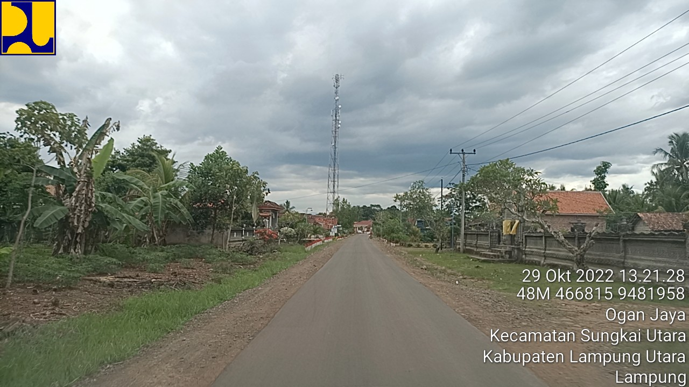
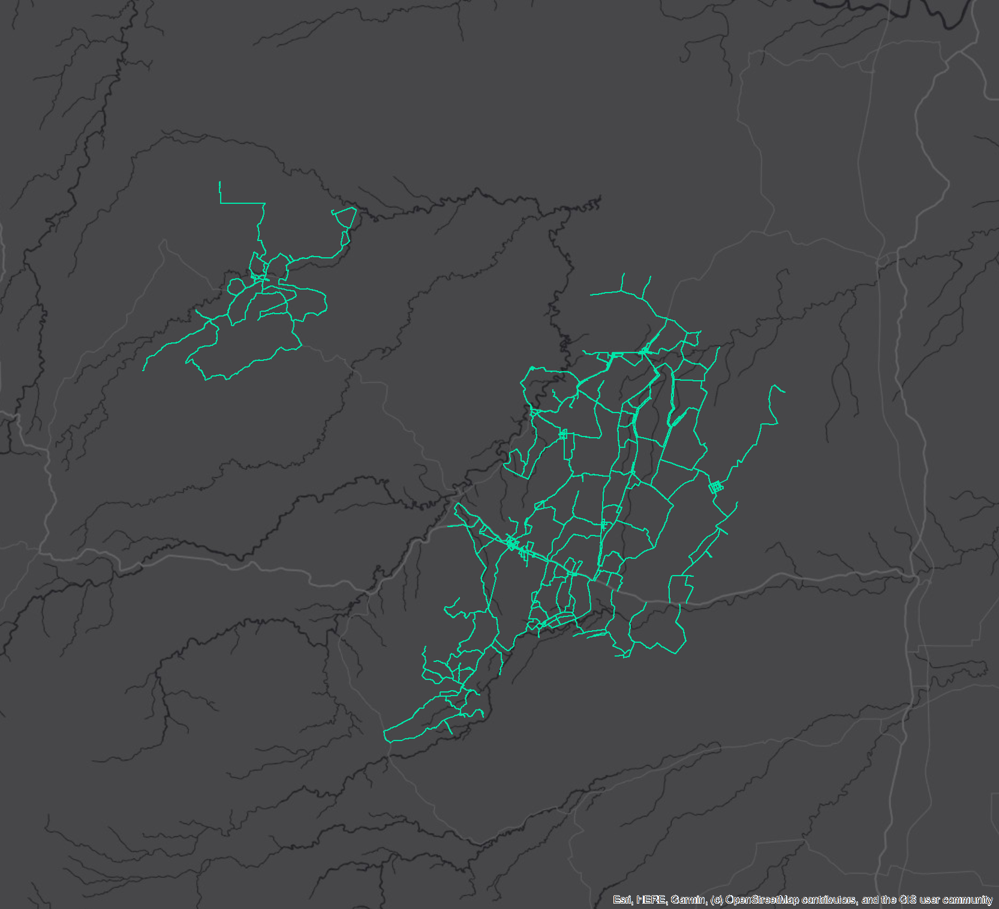
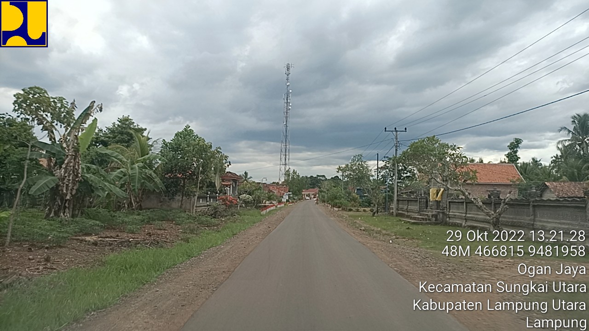
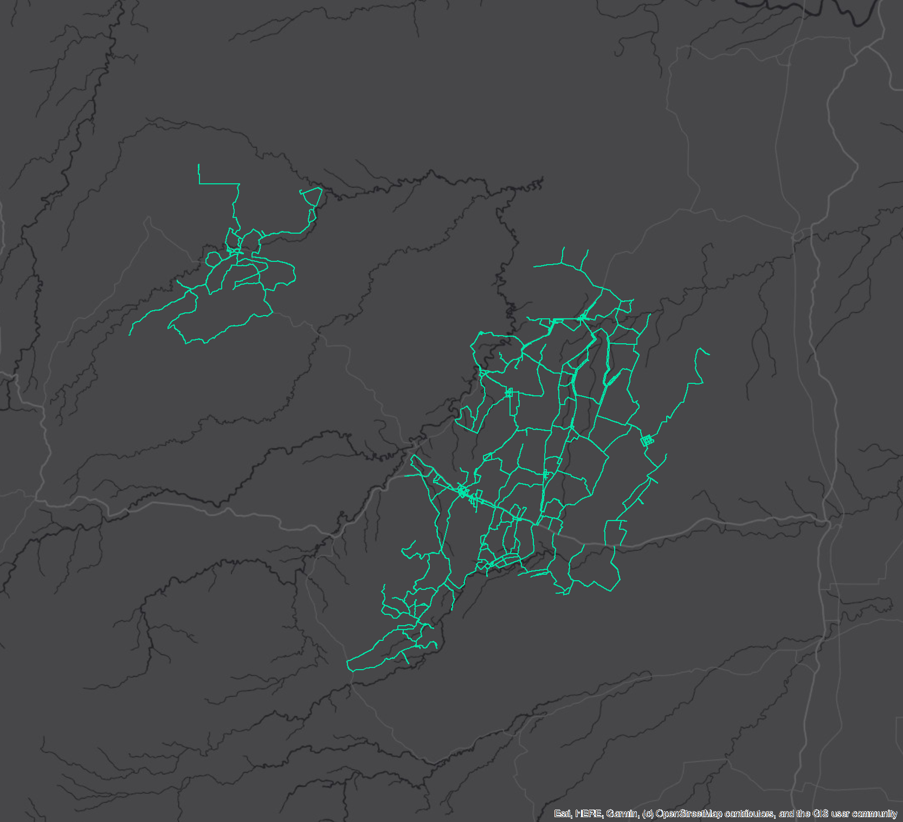

GIS
Road Condition Survey - North Lampung
 



The road condition survey was conducted across all city and regency roads—excluding provincial infrastructure—within Kotabumi, North Lampung, covering a total of 2,143.14 kilometers. Held from November 21 to 30, 2022, the project was part of the 2022 Road and Bridge Data Inventarization Program for the Indonesian Ministry of Public Works and Housing (PUPR). The survey utilized two vehicle-mounted cameras for continuous road recording, handheld GPS devices for accurate route tracking, and smartphone cameras to document bridge structures. The deliverables included comprehensive photo and video documentation, as well as a final report featuring road condition data segmented into 200-meter sections, compiled into an Excel spreadsheet. The project was carried out by a planning consultant team, in which I participated as a field surveyor.
GIS
Topographic Survey for Construction
This topographic survey was conducted over a 5-hectare site in Padang Cermin District, Pesawaran Regency, from April 3 to 5, 2024. The survey aimed to support housing construction planning by providing accurate elevation data for cut and fill calculations. The team employed a GNSS RTK system in radio mode, utilizing one base and one rover unit to collect precise topographic points across the area. The final deliverables included elevation data, a detailed contour map, and CAD drawings, serving as the primary reference for the site’s earthwork estimation. This project was executed under a private contractor, where I contributed as a field surveyor.
GIS
Indonesian Mapping Program - Sulawesi
From late 2024 to early 2025, I contributed to the Indonesian Mapping Program in northern Sulawesi as part of the national “One Map” initiative, supporting topographic basemap development under Intermap Technologies. I was involved in the digitization phase of the project, which followed the collection and processing of IFSAR (Interferometric Synthetic Aperture Radar) data. During my tenure, I completed more than 40 mapping grids—each approximately 13 kilometers wide—by digitizing features from satellite imagery and refining them with high-resolution DEM and DTM data outputs. The final deliverables were thematically classified topographic maps meeting national standards, following strict quality control and topological correction. This effort forms a crucial first phase of a multi-year plan to map all of Indonesia, contributing to land governance, infrastructure development, and spatial data integration at a national scale.